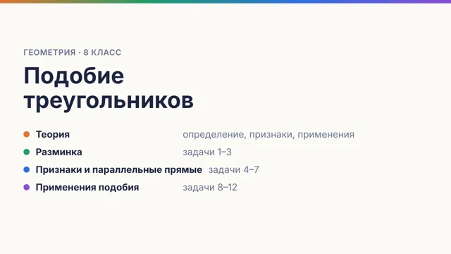
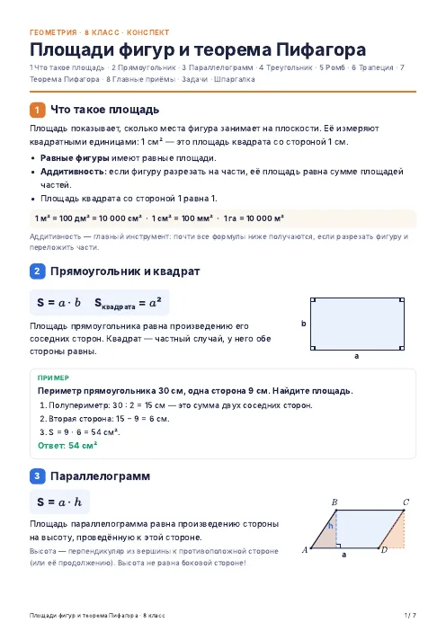
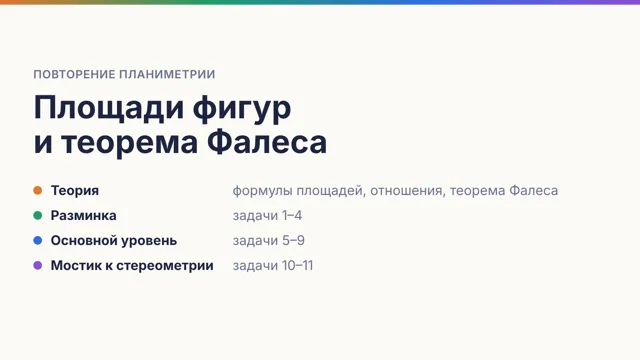
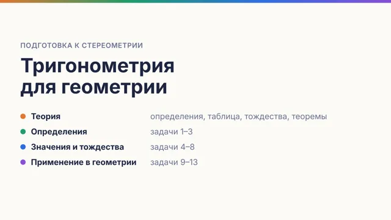
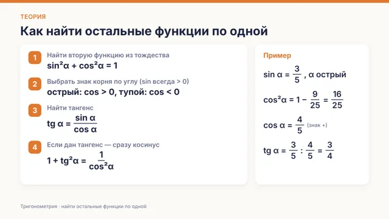

Карточки и материалы по геометрии
Теория и задачи в формате карточек для онлайн-доски, конспекты и домашние задания.
8 класс

Карточки · 17 шт.
Подобие треугольников
Определение, признаки, средняя линия, медианы, биссектриса, прямоугольный треугольник

Конспект · PDF, 7 стр.
Площади фигур и теорема Пифагора
Подробный конспект: теория, доказательства, примеры, 16 задач
9 класс
10 класс

Карточки · 14 шт.
Площади и теорема Фалеса
Повторение планиметрии перед стереометрией

Карточки · 18 шт.
Тригонометрия для геометрии
Определения, таблица, тождества, теоремы

Карточки · 11 шт.
Одна функция → остальные
Тренировка: найти sin, cos, tg по одной известной